Bedingte Formatierung
conditional-format
Ab Origin 2019 werden drei Hilfsmittel der bedingten Formatierung unterstützt, um die Zellen im Arbeitsblatt zu färben.
Um den Dialog zu öffnen:
- Wählen Sie im Menü Arbeitsblatt: Bedingte Formatierung: Markieren/Duplizieren/Heatmap.
oder
- Markieren Sie die Zellen im Arbeitsblatt, klicken Sie dann mit der rechten Maustaste und wählen Sie Arbeitsblatt: Bedingte Formatierung: Markieren/Duplizieren/Heatmap
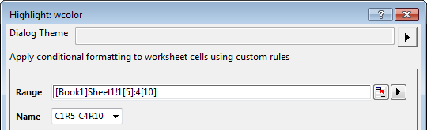
In den drei Hilfsmitteldialogen können Sie den Bereich der Zellen im Arbeitsblatt und den Namen für den ausgewählten Bereich festlegen.
Standardmäßig ist der Name die erste Zelle-letzte Zelle des Bereichs. Zum Beispiel: Wenn der Bereich von Spalte1 Zeile5 bis Spalte4 Zeile10 reicht, lautet der Name C1R5-C4R10. Sie können den Namen auch durch Eingabe von Text definieren. Im gleichen Arbeitsblatt wird der Name des verwendeten bedingten Formats in dieser Auswahlliste aufgeführt.
Hinweis: Bei einem Arbeitsblatt können diese Hilfsmitteldialoge das Aktualisieren der Regel unterstützen, wenn Sie ein bedingtes Format hinzugefügt haben, sie können aber nicht das Ändern des Datenbereichs mit dem ursprünglichen Namen unterstützen. Wenn Sie nur den Bereich des bedingten Formats aktualisieren möchten, müssen Sie ihn unter Bedingtes Format verwalten bearbeiten.
Bedingtes Markieren
Verwenden Sie dieses Hilfsmittel, um die Zellen dem Wert entsprechend zu färben, der im Dialog in der Bedingungseinstellungen angegeben ist.
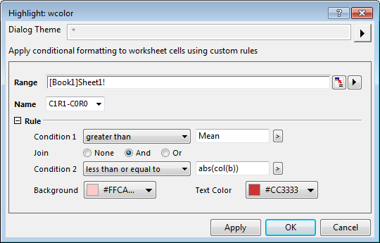
Regel
| Bedingung |
Wenn der Bereich (Spalten) Format = Numerisch
- Optionen: 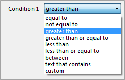
- Klicken Sie auf die dreieckige Schaltfläche, um das Ausklappmenü zu öffnen und die Statistikwerte und die textbezogenen Funktionen aufzurufen.
- 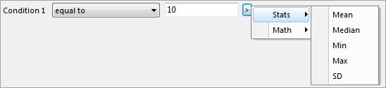
- Wenn Sie Benutzerdefiniert auswählen, wird das Bearbeitungsfeld Benutzerdefiniert gezeigt. Es wird verwendet, um Bedingungen einzugeben. x stellt Zellen im Bereich dar.
- 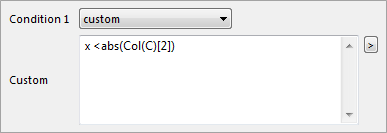
Wenn der Bereich (Spalten) Format = Datum / Zeit
- Optionen: 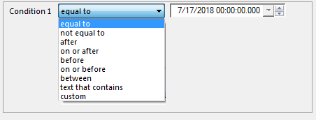
- Wählen Sie den Datumswert im Feld auf der rechten Seite aus.
|
| Zusammenfügen |
Der Standardstatus ist Kein, aber Sie können die Auswahlliste entweder auf Und oder auf Oder setzen und eine zweite Filterbedingung erstellen. |
| Hintergrund |
Legen Sie die Hintergrundfarbe für den Zellenwert fest, der mit den Bedingungen der Regel übereinstimmt. |
| Textfarbe |
Legen Sie die Textfarbe für den Zellenwert fest, der mit den Bedingungen der Regel übereinstimmt. |
Duplizierte Werte markieren
Verwenden Sie dieses Hilfsmittel, um Zellen mit dupliziertem Wert zu färben.
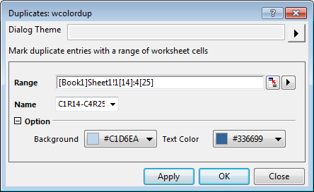
Option
| Hintergrund |
Legen Sie die Hintergrundfarbe für die Zellen mit dupliziertem Wert fest. |
| Textfarbe |
Legen Sie die Textfarbe für die Zellen mit dupliziertem Wert fest. |
Bedingte Heatmap
Verwenden Sie eine Heatmap, um Zellen entsprechend der Ebeneneinstellung zu färben.
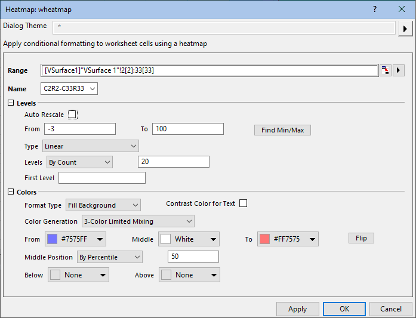
Ebene
| Automatisch neu skalieren |
Aktivieren Sie dieses Kontrollkästchen, um den Wert von Maximum und Minimum des Bereichs automatisch zu erkennen. Standardmäßig ist es aktiviert. |
| Von |
Dies ist nur verfügbar, wenn Automatisch neu skalieren deaktiviert ist. Verwenden Sie diese Option, um den Wert des Minimums festzulegen. |
| Bis |
Dies ist nur verfügbar, wenn Automatisch neu skalieren deaktiviert ist. Verwenden Sie diese Option, um den Wert des Maximums festzulegen. |
| Min./Max. suchen |
Klicken Sie auf diese Schaltfläche, um die Werte für Maximum und Minimum, basierend auf dem ausgewählten Datenbereich, zu erkennen und automatisch die Werte Bis und Von festzulegen. |
| Typ |
Wählen Sie einen Typ für die Ebenenskalierung. Einzelheiten zum Skalierungstyp finden Sie hier. |
| Stufen |
- Setzen Sie die Ebenen nach Inkrement, festgelegt durch den Wert im Textfeld rechts.
- Setzen Sie die Ebenen nach Anzahl, festgelegt durch den Wert im Textfeld rechts.
|
| Erste Ebene |
Legen Sie den Wert der ersten Ebene fest. Hinweis: Dieser Wert sollte größer oder gleich dem Standardwert der ersten Ebene sein. |
Farben
| Formattyp |
Verwenden Sie die Farbe zum Hintergrund füllen oder Text färben der Zellen im ausgewählten Bereich.
|
| Kontrastfarbe für Text |
Verwenden Sie die Kontrastfarbe für den Text gegen die Hintergrundfarbe der Zellen. |
| Farberzeugung |
- Verwenden Sie die Option, um eine Füllfarbe für die Ebene des Minimums (Von) und eine für die Ebene des Maximums (Bis) auszuwählen und die Ebenen zwischen diesen beiden Endpunkten mit einer linearen Mischung der beiden Farben zu füllen.
- Beschränkte Mischung mit 3 Farben
- Verwenden Sie diese Option, um eine Füllfarbe für die Ebene des Minimums (Von), eine Füllfarbe für die mittlere Ebene (Mitte) und eine Füllfarbe für die Ebene des Maximums (Bis) auszuwählen und um einen Zellenbereich mit einer Abstufung von drei Farben zu füllen.
- Farben zu Mischung hinzufügen
- Wählen Sie diese Option, damit Origin automatisch komplementäre Farben in die Mischung aufnimmt. Diese Option bietet Füllfarben, die eindeutiger sind als die der Beschränkten Mischung.
- Laden Sie die Palette und wenden Sie sie für die Farbfüllungen an. Klicken Sie auf die Schaltfläche Palette auswählen. Sie können eine Palette in der Standard-Inkrementliste oder unter Paletten wählen.
|
| Von |
Dies ist nur verfügbar, wenn entweder Beschränkte Mischung, Beschränkte Mischung mit 3 Farben oder Farben zu Mischung hinzufügen gewählt ist. Verwenden Sie dies, um die Farbe für die Minimumebene festzulegen. |
| Mitte |
Diese Option ist nur verfügbar, wenn Beschränkte Mischung mit 3 Farben aktiviert ist. Verwenden Sie dies, um die Farbe für die mittlere Ebene festzulegen. |
| Bis |
Dies ist nur verfügbar, wenn entweder Beschränkte Mischung, Beschränkte Mischung mit 3 Farben oder Farben zu Mischung hinzufügen gewählt ist. Verwenden Sie dies, um die Farbe für die Maximalebene festzulegen. |
| Mittlere Position |
Wird verwendet, um die Werte verbunden mit der Mittleren Farbe in Beschränkte Mischung mit 3 Farben zu steuern:
- Wenn Nach Perzentil gewählt ist, geben Sie das Perzentil des Zellenwerts ein, das der mittleren Farbe entspricht.
- Wenn Nach Prozent gewählt ist, geben Sie die Prozent des Zellenwerts ein, die der mittleren Farbe entsprechen.
- Wenn Nach Wert gewählt ist, geben Sie einen Zellenwert ein, der der mittleren Farbe entsprechen soll.
|
| Palette |
Dies ist nur verfügbar, wenn Palette laden ausgewählt ist. Wählen Sie die Standard-Inkrementliste oder die Paletten. |
| Spiegeln |
Spiegeln Sie die Reihenfolge der Farben für Von und Bis oder in der ausgewählten Palette. |
| Unterhalb |
Legen Sie eine Farbe fest. Sie wird für die Zelle verwendet, deren Wert kleiner ist als der Wert Von. |
| Oberhalb |
Legen Sie eine Farbe fest. Sie wird für die Zelle verwendet, deren Wert größer ist als der Wert Bis. |
 |
Es kann sich als praktisch erweisen, die bedingte Heatmap zu zoomen oder zu schwenken:
- Um das Arbeitsblatt zu zoomen, drücken Sie die Strg-Taste und drehen Sie das Mausrad nach oben bzw. unten.
- 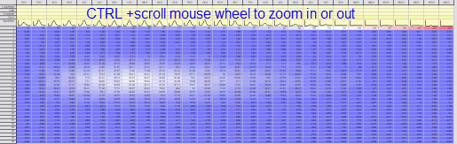
- Um das Arbeitsblatt zu schwenken, klicken Sie mit dem Mausrad (die meisten verfügen über diese Funktion) und führen Sie dann das kreisförmige 4-Punkt-Symbol des Mauszeigers, das in der Richtung angezeigt wird, in die Sie schwenken möchten. Drücken Sie zum Verlassen die ESC-Taste auf der Tastatur.
- 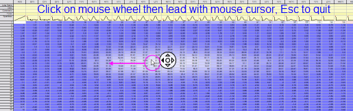
|
Bedingtes Format entfernen
Es gibt zwei Methoden, um das bedingte Format zu entfernen.
- Markieren Sie den Bereich, zu dem Sie das bedingte Format hinzugefügt haben, und wählen Sie Arbeitsblatt: Bedingte Formatierung: Format entfernen im Menü.
- ODER
- Aktivieren Sie das Arbeitsblatt mit dem bedingten Format. Wählen Sie im Menü Arbeitsblatt: Bedingte Formatierung: Bedingtes Format verwalten, um den Dialog Bedingtes Format verwalten zu öffnen. Wählen Sie die Zeile des bedingten Formats in der Liste und klicken Sie auf die Schaltfläche Entfernen, um die Formatsteuerung zu löschen.
Bedingte Formatierung verwalten
Der Dialog Bedingtes Format verwalten listet alle bedingten Formate im aktiven Arbeitsblatt auf. Er wird verwendet, um das bedingte Format durch Bearbeiten, Neuordnen und Entfernen zu verwalten.
Um den Dialog zu öffnen: Arbeitsblatt: Bedingte Formatierung: Bedingtes Format verwalten.
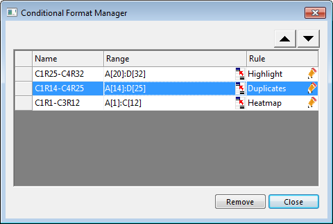
Bedingtes Format bearbeiten
Um den Namen zu ändern:
Klicken Sie doppelt auf die Zelle des Namens für das bedingte Format, um es umzubenennen.
Um den Bereich zu ändern:
- Klicken Sie auf die Schaltfläche der Bereichsauswahl
 . Sie können dann den Bereich im Arbeitsblatt neu auswählen.
. Sie können dann den Bereich im Arbeitsblatt neu auswählen.
oder
- Klicken Sie doppelt auf die Zelle des Bereichs. Sie können dann einen neuen Bereich eingeben.
Um die Regel zu aktualisieren:
- Klicken Sie auf , um den entsprechende Dialog des bedingten Formats erneut zu öffnen.
- Aktualisieren Sie die Regel oder die Optionen im Dialog.
Bedingtes Format neu ordnen
Wenn sich die bedingten Formate für einen Bereich überschneiden, wird die neu hinzugefügte bedingte Formatierung oben in der Liste angezeigt. In diesem Bereich des Arbeitsblatts wird das Format der oberen Formatierung angewnedet.
Um das bedingte Format neu zu ordnen:
- Wählen Sie aus der Liste das gewünschte bedingte Format aus.
- Verwenden Sie die Schaltfläche
 oder
oder  , um das bedingte Format zu verschieben.
, um das bedingte Format zu verschieben.
oder
- Klicken Sie auf eine leere Stelle links von dem gewünschten Namen des bedingten Formats und halten Sie die Maustaste gedrückt.
- Ziehen Sie diese Zeile des bedingten Formats nach oben oder lassen Sie sie fallen.
Bedingtes Format entfernen
Wählen Sie die Zeile des bedingten Formats in der Liste und klicken Sie auf die Schaltfläche Entfernen, um die Formatsteuerung zu löschen.